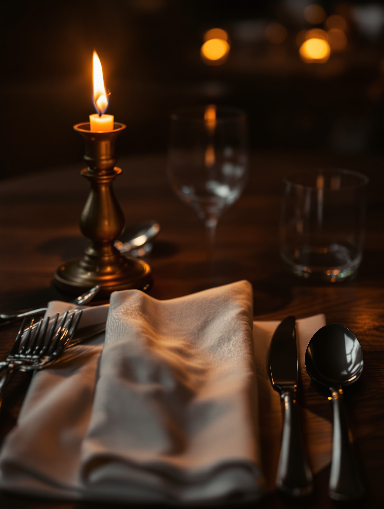
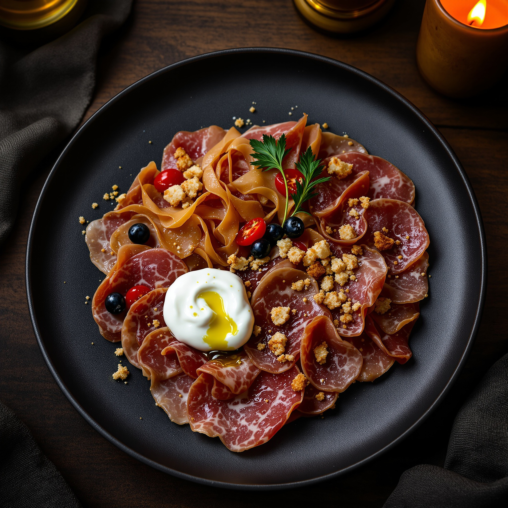
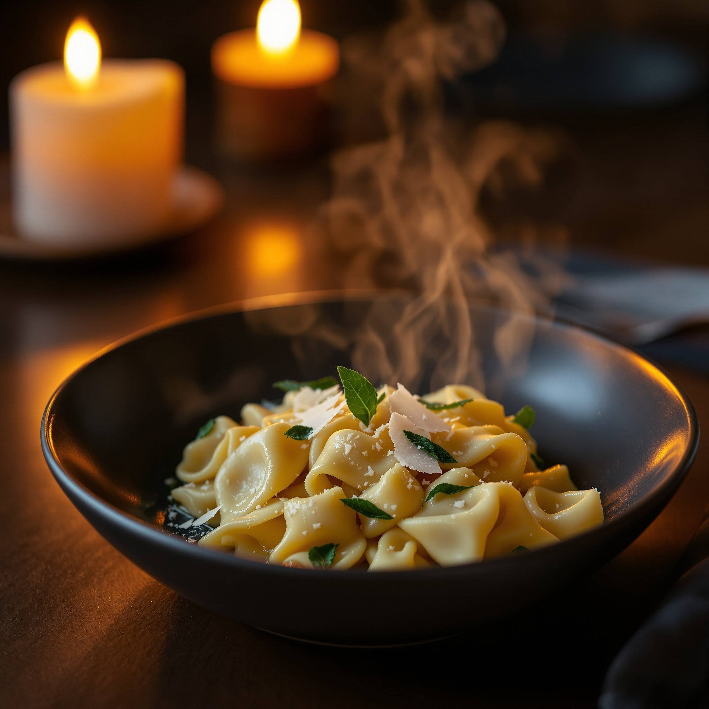
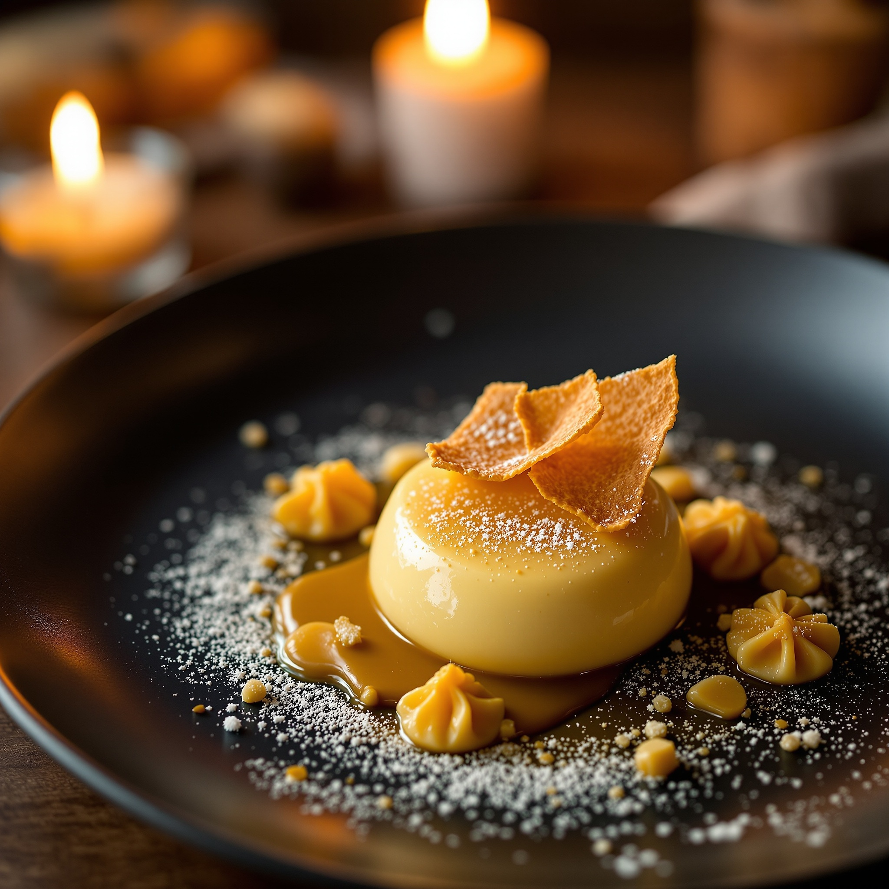
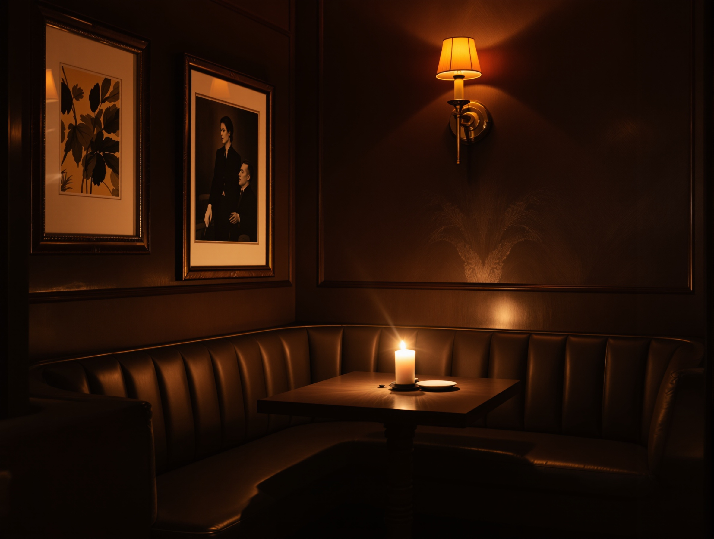
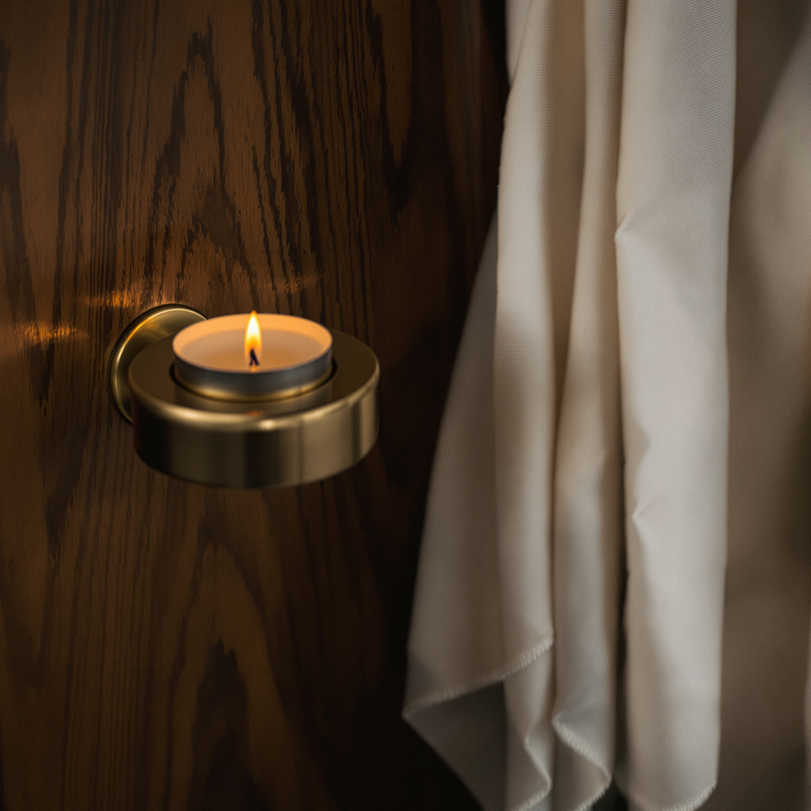

ottocene Solo di sera
La tradizione regionale italiana, cucinata con una mano contemporanea. Una sala raccolta a lume di candela, a Porta Venezia. Apriamo quando cala la sera.
Il biglietto del maître
Un solo turno, quando fuori è già buio.
Cuciniamo la sera, e soltanto la sera.
Mettiamo in tavola la tradizione regionale italiana: i tortelli tirati a mano, il brasato, lo zabaione. Piatti che riconoscete, rifiniti con una mano contemporanea.
La sala è piccola, in legno scuro e ottone, illuminata a candela. Qui si sta seduti senza fretta, si parla piano, si beve bene. Una cena, non uno spettacolo.
— La tavola di Ottocene, Via Sirtori, Milano

Le portate
La carta, dall'antipasto al dolce.
Alcuni dei piatti che troverete stasera. La cucina segue la stagione e le regioni d'Italia, un corso alla volta.
-

AntipastoAffettati e ricotta montata 14 €Salumi tagliati sottili, ricotta montata, olio nuovo e briciole tostate.
-

PrimoTortelli burro e salvia 16 €Tirati a mano, burro nocciola, salvia e grana a scaglie.
-
Secondo
Guancia brasata su polenta 22 €
Brasata lenta, riduzione scura, polenta morbida e verdure di stagione.
-

DolceZabaione e amaretto 9 €Il classico zabaione, amaretto croccante, un tocco contemporaneo.
Piatti reali dalla nostra carta. I prezzi qui indicati sono illustrativi e vanno confermati: la carta cambia con la stagione.
La mano in cucina
La tradizione, rivista con misura.
Partiamo dalla ricetta di casa e le togliamo il superfluo. Stesso sapore, gesto più pulito. Il tocco creativo si vede al passe, non nel nome del piatto.
- Radice regionale. Ogni portata nasce da una ricetta italiana precisa, non da un'idea astratta.
- Mano contemporanea. Impiattiamo essenziale, dosiamo i grassi, lasciamo respirare il piatto.
- Rifinitura a vista. L'ultimo gesto arriva a candela accesa, poco prima che il piatto esca.
La sala
Metà del piatto è la luce.


Pochi tavoli, legno scuro, ottone caldo e lino avorio. La luce è bassa e viene dalle candele. Per un locale che apre solo di sera, l'atmosfera è parte della cena.
La nostra tavola
Una sera che vale il tavolo.
Chi torna racconta la stessa cosa: piatti familiari fatti con cura, una sala calda, una sera senza fretta.
Sintesi delle recensioni, non una citazione attribuita a una singola persona.
Prenotare
Ci si siede dalle 19:00.
Tutte le sere, dalle 19:00
Siamo in Via Giuseppe Sirtori, a due passi da Porta Venezia. La sala è piccola: per la vostra tavola conviene chiamare.
Rispondiamo al telefono e fissiamo insieme la sera. Nessun modulo, nessuna attesa.
Orario di apertura serale reale; l'orario di chiusura viene confermato al telefono.